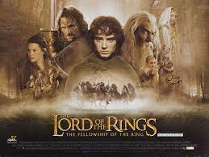
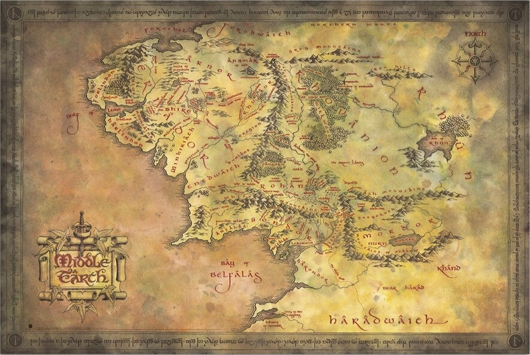
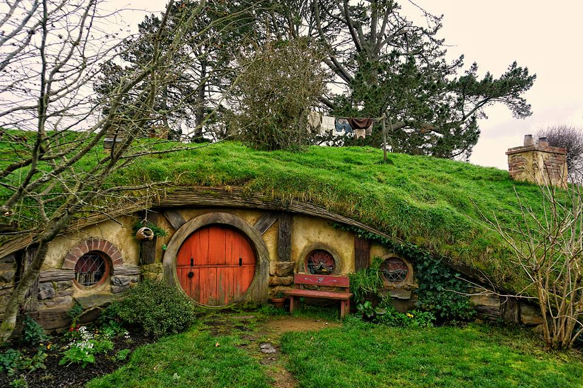
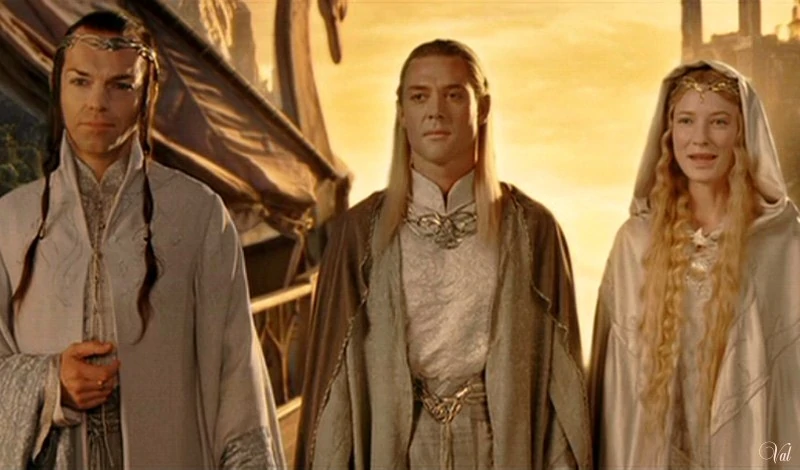
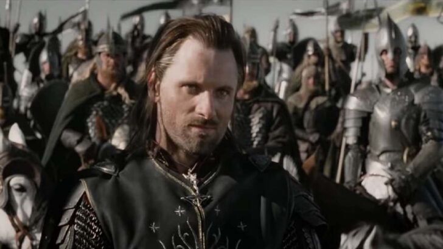
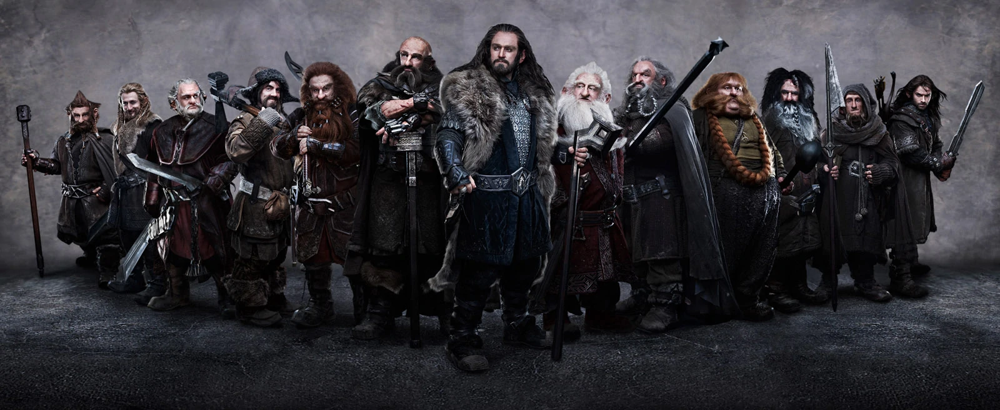
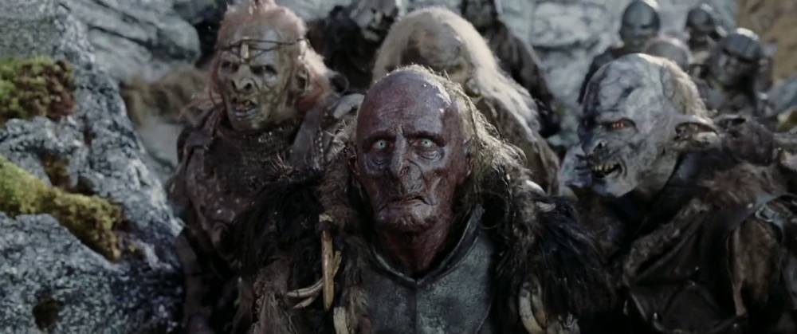

Зміст:
Середзем'я
Середзем'я (англ. Middle-earth) — центральний континент вигаданого світу, в якому відбуваються події легендаріуму Дж. Р. Р. Толкіна: «Гобіта» й «Володаря перснів», а також, частково, «Сильмариліона» та «Незакінчених сказань». Толкін не раз зазначав, що Середзем'я розташовано на Землі.Він описував його, як вигадану епоху минулого не лише у «Володарі перснів», але й у кількох листах. Кінець Третьої епохи він датував приблизно 6000 років до його часу. Околиці Шира — це сучасна Північно-Західна Європа (Гобітон, наприклад, містився на тій самій широті, що й сучасний Оксфорд).Проте, у відповідях на деякі листи, він також називав описані в його творах історії, як іншу реальність. У 1971 році, коли — в ході інтерв'ю — його запитали, чи сказання Середзем'я відбувалися в іншу добу, він заперечив: «Ні… На іншому рівні уяви — так»
Географія
Толкін підготував декілька карт Середзем'я та його окремих областей, де відбуваються події творів. Не всі карти були опубліковані за життя письменника. Основними були ті, що публікувалися в «Гобіті», «Володарі перснів», «Сильмаріліоні» та «Незакінчених сказаннях». Більшість подій Першої епохи мали місце на субконтиненті Белеріанд, який під кінець того періоду пішов під воду. Блакитні гори з правого краю карти Белеріанда — це ті ж таки Блакитні гори, що з'являються у лівому верхньому куті карти Середзем'я Другої і Третьої епох. Карти Середзем'я охоплюють лише невелику частину світу: не показані значні частини Руна і Гарада, а також інші континенти. Середзем'я – це великий континент із видовженою береговою лінією на заході, що поступово тягнеться на південний схід. Береги Середзем'я омиваються Великим морем (океаном). На півночі води моря утворюють затоку Форохел, що замерзає, і яка також оточена лінією Блакитних гір. На півдні — Белфалас, на берегах якого знаходиться ґондорський порт Пеларгір, а ще далі на південь — Умбар, цитадель корсарів. У Місячній затоці стоїть ельфійське місто-порт Сірі гавані — єдине місце, звідки кораблі вирушають у Валінор. У Велике море впадають річки Ізен (Анґрен), Брендівинна (Барандуїн) і Андуїн. Континент розділений на дві частини Імлистими горами, на півночі яких знаходиться Анґмар. У західного підніжжя гір стоїть Рівенделл. На захід від хребта пролягли лісисті рівнини Арнора і Еріадора, з якими на півдні межує Шир. На схід від хребта лежать торгові міста Дейл та Есґарот на берегах Довгого озера, а також королівство гномів Еребор й Самотня гора. У південних відрогів Імлистих гір міститься ліс Фанґорн, на північ від нього — Лотлоріен, а на південний захід — Ізенґард, цитадель Сарумана. З північно-східних відрогів Імлистих гір бере витоки річка Андуїн, що пролягає через степи Рохана. Далі річка протікає через Аноріен та Ітіліен, розділяючи Ґондор і Мордор, та впадає у Велике море в районі Белфаласа. На її правому березі лежить королівство Ґондор зі столицею в місті Мінас-Тіріт, а безпосередньо на річці збудована ґондорська фортеця Осґіліат. На лівому березі, на схід від річки тягнеться гряда Попелястих гір, що відділяють від решти світу Мордор, країну орків і темного владаря Саурона. На південь від Ґондора й Мордора пролягає жарка й пустельна країна Харад. Схід Середзем'я маловивчений і заселений, в основному, кочовими племенами істерлінгів, що розселені в степах на схід від Рохана і південний схід від Довгого озера, на берегах внутрішнього моря Рун. Територія, охоплена картою (створеною самим автором) — прямокутник приблизно 2000 на 1400 миль. Це приблизно 7 млн км² (якщо не враховувати моря, то це відповідає території Європи). Народи Середзем' я
Флора й фауна
Середзем'я населене цілком звичайними земними тваринами та рослинами. Із диких тварин згадуються ведмеді, лисиці, вовки, олені, лані. У господарстві жителі Середзем'я використовують коней та поні. Найбільш поширені сільськогосподарські культури — пшениця, жито, ячмінь, різноманітні коренеплоди (зокрема, картопля), тютюн та ін. У землях Ґондору культивується виноград та поширене виноробство. Із невідомих на Землі рослин згадуються: меллірн (гігантські дерева, з яких складається ліс Лотлоріен), ацелос (синд."королівський лист" — цілюща рослина, яку, за переказами, дунадани привезли із собою з Нуменору), Біле Дерево Німлот (нащадок світлоносного Телперіона, найдавнішого дерева), що є державним символом Ґондору. Деякі тварини (і навіть рослини) Середзем'я наділені даром мови (як розумінням, так і здатністю говорити). Наприклад, чорний дрізд у «Гобіті» чудово розуміє людську мову, а лучник Бард з Езгарота, у свою чергу, розуміє скрекотіння дрозда. Згадується, що це вміння передалося Лучнику по роду- ніхто інший із міста дрозда не розуміє. Натомість ворон Роак не тільки розуміє мову, а й розмовляє з гобітами та гномами на вестроні. Крім того, даром мови володіють гігантські орли Манве, що живуть у східних відрогах Імлистих Гір. На вестроні спілкуються і гігантські павуки, що мешкають у Морок-Лісі. На Чорному говорі також могли говорити перевертні. Із рослин, що володіли даром мови, найбільш відомий Старий В'яз (англ. Old Man Willow), який мало не занапастив Піппіна й Меррі, який пригрозив перекусити обох, якщо їх товариші (Фродо й Сем) не приберуть вогонь від його коріння. Крім того, Старий В'яз має дар гіпнозу.
Народи
Як і всі землі й материки,Середзем'я також населено своїми особливими народами й расами,які не є звичними в нашому світі.Ці народи були частково або повністю взяті з різних міфологій,або народних казок

Ельфи
Ельфи – умовно безсмертні істоти, що наділені вродженим чаклунством, неймовірною витривалістю та гострим зором. Вони діляться на авар та елдар (що складаються з трьох народів — ваніар, нолдор та телер, які, у свою чергу, діляться на синдар та нандор). Мешкають у лісах Морок-Лісу (синдарські аристократи, основне населення — нандор), Лотлоріену (нандор, синдар і деяка кількість нолдор), в Імладрісі (синдар, нолдор та невелика кількість інших) і на узбережжі Великого Моря, в Ліндоні (нащадки фалатрім, нолдор і синдар). Десь далеко на Сході, біля Вод Пробудження, стародавньої прабатьківщини ельфів, живуть останні і найпотайніші з ельфів - авари, що відмовилися покинути Середзем'я і вирушити до Валінору.
Люди
Люди. Більша частина Середзем'я населена людьми різних національностей і рас. Народи Арнора і Ґондора складають дунадани, нащадки останніх вірних нуменорців (нащадки Півночі та Півдня, ґондорська аристократія, жителі Белфаласа), нащадки змішаних шлюбів (наприклад, у Лебенніні та в землях Артедайну та Кардолану до падіння королівств) та корінне населення, яке жило там до приходу нуменорських колоністів (пригоряни, люди Білих гір, жителі Лебенніна). У лісах Аноріена і Рогана жили таємничі лісові племена друедайн, вони кремезні, невисокі і майже не поступаються ельфам у вмінні жити і воювати в лісі. В Анґмарі і Рудаурі жили люті люди пагорбів, що загинули після падіння Ангмара, південніше жили дикуни Дунланда, Енедвайта й Мінгіріата, споріднені з холодом Першої Епохи, відчайдушно ненавиділи нуменорців, ельфів і друедайн. Населення Рогану (рогірими) - світловолосі, високі люди, які займаються в основному конями, але ведуть переважно осілий спосіб життя, на відміну від своїх сусідів, кочівників-істерлінгів, що живуть у степах Сходу. Зрештою, люди Півдня — смагляві, темношкірі гарадрими, про які мало що відомо. Бардинги, озерники та беорнінги ведуть переважно осілий землеробський спосіб життя, проте якщо в житті бардингів та озерників важливе значення відіграє торгівля та ремесла, то беорнінги займаються переважно землеробством та переробкою лісу та неохоче пускають через свої землі чужинців. Вони схожі зовні й внутрішньо з рогірим, так як предки останніх прийшли в Каленардон з півночі - із загиблого королівства Рованіона (якщо бардинги і озерники були нащадками жителів околиць і біженців з півдня, то рогірим походили від народу Еотедів, нащадків королівської армії, і правив ними спадкоємець корони Рованіону, який став першим ватажком еотедів та королів Рогану). Крайню північ заселяють лоссоти — мисливці на морського звіра, що живуть у хатинах біля затоки Форохель і використовують лижі для пересування снігом.
Гноми
Гноми – низькорослий народ, створений не Еру Ілуватаром, а валаром Ауле. Гноми живуть у підземеллях Кгазад-Дума, Еребору, Еред Луїн, Сірих гір і Залізних Пагорбів, а також далеких східних гір, видобувають дорогоцінні камені та золото і славляться як неперевершені металурги, ковалі та ювеліри. Після Війни Персня гноми народу Дуріна також зайняли Сяючі Печери Агларонда в Рогані. Мало хто бачив жінок-гномів, а ті, хто бачив, не завжди могли відрізнити їх від молодих гномів-чоловіків.
Орки
Орки – жорстокий народ, створений Темним Володарем Мелькором ще в Епоху Дерев за допомогою магічних експериментів над полоненими ельфами. Це страшні істоти з чорною, жовто- або зелено-коричневою шкірою, схильні до невмотивованої жорстокості, канібалізму та людоїдства. При цьому вони є хорошими майстрами та інженерами. На відміну від інших рас, створюють і використовують машини та механізми. Оскільки вони були створені в досонячну епоху і генетично не переносять яскравого сонячного світла, то живуть переважно у підземних печерах, де часто воюють із гномами. Наступник Мелькора, Саурон, вивів особливий вид орків, який отримав назву урук-хай – буквально «народ орків», що відрізняється величезними розмірами та фізичною силою. Саруман, наслідуючи Саурона в його діяннях, удосконалив урук-хай, давши їм здатність переносити сонячне світло (можливо, схрестивши їх для цього з людьми). Основні місця їх проживання - Мордор, Ізенгард, Морія і гори в районі Гундабада, а також інші підземні простори Імлистих і Сірих гір, наприклад, Місто Гоблінів.
